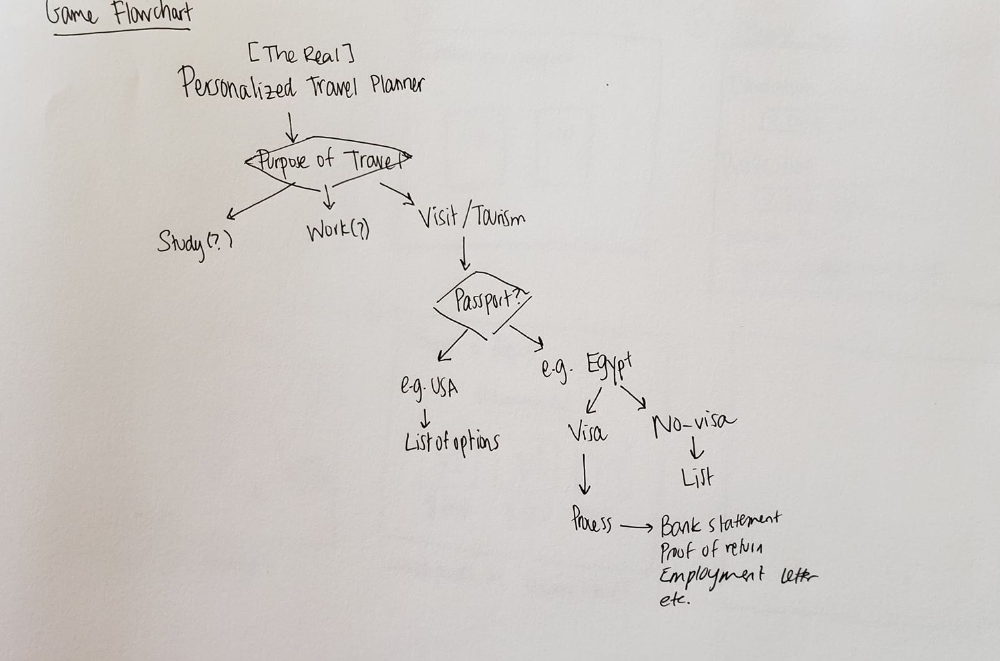
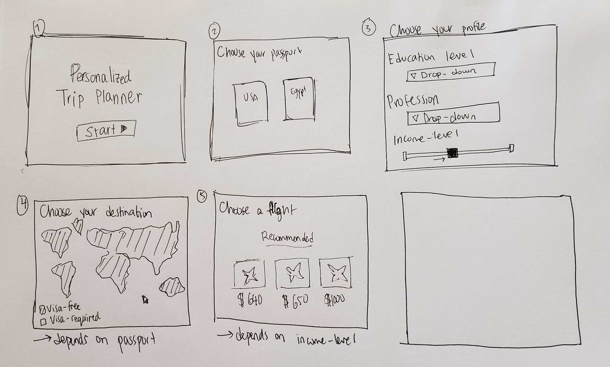

For my midterm project, I want to build a 1st-person game simulation, where th user becomes the main character, and makes a series of decisions. The theme of my game simulation will be about someone planning their trip abroad, but will explore different aspects of trip-planning than the ones usually on such websites.
I am very interested in filmmaking and storytelling, but a particular subset I have always been interested in is first-person narration – particularly as a means of empathy-building. In a class I took at NYUAD called Politics of Code, we discussed game simulations, and I have been wanting to try and build one since then. A game that I really liked and have been inspired by is ‘Papers, Please’, which puts the user in the position of the immigration officer making decisions regarding who to let in or reject from the border. My midterm project idea would aim to be a simplified game, in order to build a project with a limited number of possibilities that I can manage within the time frame.
The experience is about someone planning a trip, and wants to highlight issues with differences in privilege. For example, the user would first have to choose their passport, which then determines what the rest of the trajectory looks like. Other options that make a difference are financial background, choice of destination, and education level.
The topic is one that I am really interested in making something about, as I am currently in limbo, waiting on a response from the UK embassy for a visa to attend a conference in 10 days. Like most other people with a weak passport, I have also had my fair share of visa problems through travels, and it’s always interesting when my friends and I coming from different countries discuss our varying experiences.
The experience is not intended to really be a game, so there is no winning or losing, users will just be encouraged to re-try the game while trying different options to understand the point.
Below are examples of the flowchart that would power the game and a storyboard example.


Here, this link contains what I've been working on. So far, I've spent most of my time trying to figure out two things in the project: the logic, and the interactivity. Since it's not a game, I want to make sure I build it in a way that utilizes p5, and that looks visual.

Logic
Since I want to build this as a simulation where the user's decisions affects the screens s/he sees next, the project progresses as a flowchart. What I've found to be the best way to do it is to divide it into states: e.g. state 1 is choosing the passport, state 2 is choosing the destination, etc. Then, I divide them further into substates, so that, for example, state 2 substate 1 is choosing an Egyptian passport, and state 2 substate 2 is choosing an American passport.
This keeps moving from one screen to another and back fairly similar. Something that I'm really trying to do is to strongly integrate both states, because I don't want the user to move forward with one scenario, and not see how different the results would have been if the choices were different. As such, each screen would contain an ability to see a difference that would have existed if the choice was different. For example, after choosing the passport, there is a flag on the top right of the screen showing the nationality of the traveller. When hovering over the flag, it switches to the flag of the other country, and the whole screen changes to the other sub-state where the user is of the other nationality. This way, just by hovering the user can quickly see the difference between both screens, and be able to draw a comparison. Additionally, because I want it to be about exploring different options, all the screens are (or will be) linked with 'back' and 'next' buttons. Initially, I had a 'back' button on every screen, for example, and each one was coded in the 'state' for that display screen. I realized, however, that it is much easier to simply have 1 back button that is always shown (except on the title screen), with the code specifying that when it is pressed on, the state is (state - 1).
Interactivity
I'm trying to think of ways to not just make this a series of text on the screen, but make every step of it more interactive and/or visual. So far, I've found that enabling switching between screens and scenarios helps make it feel more interactive. Additionally, I've noticed that the small details help a lot - like having the buttons inverse colour when hovered on. I'm trying to make most or all elements change when the mouse is hovered over them, cause I feel like that encoruages a little more curiosity when going through the steps. For example, when hovering over the selection for passport, each one shows the map of visa-free countries for that passport. In the screen after, when hovering over a destination coutnry, it shows whether or not this country would require a visa. Though this is information I can have on the same screen through adding images or text underneath, I felt like having it only appear when the user prompts an action makes it a bit more interesting.
Challenges
I only have a few basic starting points of the application, which means it's been relatively easier to keep track of the code. However, as I build more options into it (e.g. more than just 2 destination countries, and more steps to the process), it'll become more difficult to link between different steps and keep track of which state and sub-state the user is on. On the other hand, I've also decided to initially cut down on the options available in some cases, because I feel like it makes the point clearer. For example, in terms of choosing the passport, I would like to only have two options, just to show how big the difference between two countries could be. If the options are much more, there will be a much more vague gradient, and the point of the app will get lost among the many choices the user can make.
Visuals!
I decided that I want to build something that is much more visual, partly because I think it would be more appealing and entertaining, and partly because I enjoy drawing in p5 so much, and thought it would be a lot more fun to build if I had to draw more.
I started storyboarding all over, and decided to only focus on the visa applicatoin part as a start, and only move on to other parts of planning your trip in detail (e.g. booking flights, hotels, managing finances) when this part is done. Initially, I was thinking of having just 1 screen for each aspect, but I felt like it was too text-based and moved by too quickly. After starting working on my new plan, I realized that it resembles a project I once saw and may have been inspired by. It was called 'the waiting game', and was a simulation of how difficult the immigration process into the U.S is. The experience starts off warning users that they'll be spending a lot of time waiting, in an attempt to give them a glimpse of how hectic and extensive the immigration process is. This seems very similar to what I'm going for, which I think fits my idea well, but I want to explore how I can accomplish it in different ways visually.
Interactivity pt.2
I'm also exploring different ways to make the visuals interactive. I want to make sure that what's being drawn on screen can't just be drawn on a different editor program (or even just Microsoft Paint) and imported as a single image and background. As such, I'll try to make a lot of aspects of the scenes interactive or animated. In the following picture, for example, while it's just a very simple view of a laptop, you can press on the "next" button on the screen, and see your progress (which page/5 you are on) through the progress circles at the bottom changing color.

Final Version
Below are screenshots of the final version of my project. I decided to focus my theme on just the visa process, and to try to express how annoying and frustrating it is at every step.